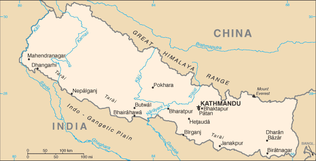
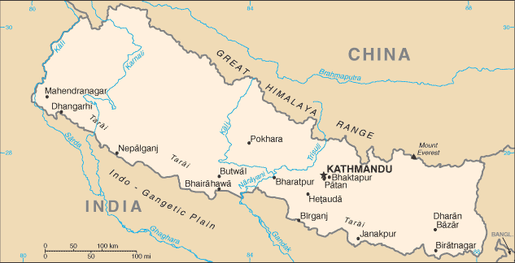

South Asia :: NEPAL
Introduction :: NEPAL
-
During the late 18th-early 19th centuries, the principality of Gorkha united many of the other principalities and states of the sub-Himalayan region into a Nepalese Kingdom. Nepal retained its independence following the Anglo-Nepalese War of 1814-16 and the subsequent peace treaty laid the foundations for two centuries of amicable relations between Britain and Nepal. (The Brigade of Gurkas continues to serve in the British Army to the present day.) In 1951, the Nepali monarch ended the century-old system of rule by hereditary premiers and instituted a cabinet system that brought political parties into the government. That arrangement lasted until 1960, when political parties were again banned, but was reinstated in 1990 with the establishment of a multiparty democracy within the framework of a constitutional monarchy.An insurgency led by Maoists broke out in 1996. The ensuing 10-year civil war between Maoist and government forces witnessed the dissolution of the cabinet and parliament and the re-assumption of absolute power by the king in 2002. A peace accord in 2006 led to the promulgation of an interim constitution in 2007. Following a nationwide Constituent Assembly (CA) election in 2008, the newly formed CA declared Nepal a federal democratic republic, abolished the monarchy, and elected the country's first president. After the CA failed to draft a constitution by a May 2012 deadline set by the Supreme Court, then-Prime Minister Baburam BHATTARAI dissolved the CA. Months of negotiations ensued until March 2013 when the major political parties agreed to create an interim government headed by then-Chief Justice Khil Raj REGMI with a mandate to hold elections for a new CA. Elections were held in November 2013, in which the Nepali Congress won the largest share of seats in the CA and in February 2014 formed a coalition government with the second place Communist Party of Nepal-Unified Marxist-Leninist and with Nepali Congress President Sushil KOIRALA as prime minister. Nepal's new constitution came into effect in September 2015.
Geography :: NEPAL
-
Southern Asia, between China and India28 00 N, 84 00 EAsiatotal: 147,181 sq kmland: 143,351 sq kmwater: 3,830 sq kmcountry comparison to the world: 94slightly larger than Arkansastotal: 3,159 kmborder countries (2): China 1,389 km, India 1,770 km0 km (landlocked)none (landlocked)varies from cool summers and severe winters in north to subtropical summers and mild winters in southTarai or flat river plain of the Ganges in south; central hill region with rugged Himalayas in northmean elevation: 2,565 melevation extremes: lowest point: Kanchan Kalan 70 mhighest point: Mount Everest 8,850 m (highest peak in Asia and highest point on earth above sea level)quartz, water, timber, hydropower, scenic beauty, small deposits of lignite, copper, cobalt, iron oreagricultural land: 28.8%arable land 15.1%; permanent crops 1.2%; permanent pasture 12.5%forest: 25.4%other: 45.8% (2011 est.)13,320 sq km (2012)severe thunderstorms; flooding; landslides; drought and famine depending on the timing, intensity, and duration of the summer monsoonsdeforestation (overuse of wood for fuel and lack of alternatives); contaminated water (with human and animal wastes, agricultural runoff, and industrial effluents); wildlife conservation; vehicular emissionsparty to: Biodiversity, Climate Change, Climate Change-Kyoto Protocol, Desertification, Endangered Species, Hazardous Wastes, Law of the Sea, Ozone Layer Protection, Tropical Timber 83, Tropical Timber 94, Wetlandssigned, but not ratified: Marine Life Conservationlandlocked; strategic location between China and India; contains eight of world's 10 highest peaks, including Mount Everest and Kanchenjunga - the world's tallest and third tallest mountains - on the borders with China and India respectively
People and Society :: NEPAL
-
29,033,914 (July 2016 est.)country comparison to the world: 46noun: Nepali (singular and plural)adjective: NepaliChhettri 16.6%, Brahman-Hill 12.2%, Magar 7.1%, Tharu 6.6%, Tamang 5.8%, Newar 5%, Kami 4.8%, Muslim 4.4%, Yadav 4%, Rai 2.3%, Gurung 2%, Damai/Dholii 1.8%, Thakuri 1.6%, Limbu 1.5%, Sarki 1.4%, Teli 1.4%, Chamar/Harijan/Ram 1.3%, Koiri/Kushwaha 1.2%, other 19%note: 125 caste/ethnic groups were reported in the 2011 national census (2011 est.)Nepali (official) 44.6%, Maithali 11.7%, Bhojpuri 6%, Tharu 5.8%, Tamang 5.1%, Newar 3.2%, Magar 3%, Bajjika 3%, Urdu 2.6%, Avadhi 1.9%, Limbu 1.3%, Gurung 1.2%, other 10.4%, unspecified 0.2%note: 123 languages reported as mother tongue in 2011 national census; many in government and business also speak English (2011 est.)Hindu 81.3%, Buddhist 9%, Muslim 4.4%, Kirant 3.1%, Christian 1.4%, other 0.5%, unspecifed 0.2% (2011 est.)0-14 years: 30.93% (male 4,646,048/female 4,333,105)15-24 years: 21.86% (male 3,176,158/female 3,169,721)25-54 years: 35.99% (male 4,707,264/female 5,740,985)55-64 years: 6.22% (male 877,288/female 927,202)65 years and over: 5.02% (male 723,523/female 732,620) (2016 est.)total dependency ratio: 61.8%youth dependency ratio: 52.9%elderly dependency ratio: 9%potential support ratio: 11.1% (2015 est.)total: 23.6 yearsmale: 22.4 yearsfemale: 24.8 years (2016 est.)country comparison to the world: 1651.24% (2016 est.)country comparison to the world: 9219.9 births/1,000 population (2016 est.)country comparison to the world: 825.7 deaths/1,000 population (2016 est.)country comparison to the world: 174-1.9 migrant(s)/1,000 population (2016 est.)country comparison to the world: 163urban population: 18.6% of total population (2015)rate of urbanization: 3.18% annual rate of change (2010-15 est.)KATHMANDU (capital) 1.183 million (2015)at birth: 1.04 male(s)/female0-14 years: 1.07 male(s)/female15-24 years: 1 male(s)/female25-54 years: 0.82 male(s)/female55-64 years: 0.95 male(s)/female65 years and over: 0.86 male(s)/femaletotal population: 0.95 male(s)/female (2016 est.)20.1note: median age at first birth among women 25-29 (2011 est.)258 deaths/100,000 live births (2015 est.)country comparison to the world: 60total: 28.9 deaths/1,000 live birthsmale: 30.2 deaths/1,000 live birthsfemale: 27.5 deaths/1,000 live births (2016 est.)country comparison to the world: 66total population: 70.7 yearsmale: 70.1 yearsfemale: 71.3 years (2016 est.)country comparison to the world: 1552.18 children born/woman (2016 est.)country comparison to the world: 9949.7% (2011)5.8% of GDP (2014)country comparison to the world: 1255 beds/1,000 population (2006)improved:urban: 90.9% of populationrural: 91.8% of populationtotal: 91.6% of populationunimproved:urban: 9.1% of populationrural: 8.2% of populationtotal: 8.4% of population (2015 est.)improved:urban: 56% of populationrural: 43.5% of populationtotal: 45.8% of populationunimproved:urban: 44% of populationrural: 56.5% of populationtotal: 54.2% of population (2015 est.)0.21% (2015 est.)country comparison to the world: 9739,400 (2015 est.)country comparison to the world: 632,300 (2015 est.)country comparison to the world: 50degree of risk: highfood or waterborne diseases: bacterial diarrhea, hepatitis A and E, and typhoid fevervectorborne disease: Japanese encephalitis, malaria, and dengue fever (2016)2.9% (2014)country comparison to the world: 18930.1% (2014)country comparison to the world: 174.7% of GDP (2014)country comparison to the world: 87definition: age 15 and over can read and writetotal population: 63.9%male: 76.4%female: 53.1% (2015 est.)total: 12 yearsmale: 12 yearsfemale: 13 years (2013)total number: 2,467,549percentage: 34% (2008 est.)total: 3.5%male: 4.2%female: 2.9% (2008 est.)
Government :: NEPAL
-
conventional long form: Federal Democratic Republic of Nepalconventional short form: Nepallocal long form: Sanghiya Loktantrik Ganatantra Nepallocal short form: Nepaletymology: the Newar people of the Kathmandu Valley and surrounding areas apparently gave their name to the country; the terms "Nepal," "Newar," "Nepar," and "Newal" are phonetically different forms of the same wordfederal parliamentary republicname: Kathmandugeographic coordinates: 27 43 N, 85 19 Etime difference: UTC+5.75 (10.75 hours ahead of Washington, DC, during Standard Time)14 zones (anchal, singular and plural); Bagmati, Bheri, Dhawalagiri, Gandaki, Janakpur, Karnali, Kosi, Lumbini, Mahakali, Mechi, Narayani, Rapti, Sagarmatha, Seti1768 (unified by Prithvi Narayan SHAH)Republic Day, 28 May (2008), the abdication of Gyanendra SHAH, last Nepalese monarch, and the establishment of a federal republicseveral previous; latest adopted 20 September 2015; amended January 2016English common law and Hindu legal conceptshas not submitted an ICJ jurisdiction declaration; non-party state to the ICCtcitizenship by birth: yescitizenship by descent: yesdual citizenship recognized: noresidency requirement for naturalization: 15 years18 years of age; universalchief of state: President Bidhya Devi BHANDARI (since 29 October 2015); Vice President Nanda Bahadar PUN (since 31 October 2015)head of government: Prime Minister Pushpa Kamal DAHAL (since 4 August 2016); note - Prime Minister Khadga Prasad OLI resigned on 24 July 2016cabinet: Council of Ministers appointed by the prime minister; cabinet dominated by the Nepali Congress and the Communist Party of Nepal-United Marxist-Leninistelections/appointments: president indirectly elected by the Constituency Assembly; term extends until the new constitution is promulgated; president elected on 29 October 2015 (next election NA); prime minister indirectly elected by the Constituent Assemblyelection results: Bidhya Devi BHANDARI elected president; Constituent Assembly vote count - Bidhya Devi BHANDARI (CPN-UML) 327, Kul Bahadur GURUNG (NC) 214; BHANDARI is Nepal's first woman presidentdescription: unicameral Constituent Assembly or Sambidhan Sabha (601 seats; 240 members directly elected in single-seat constituencies by simple majority vote, 335 directly elected in a single nationwide constituency by proportional representation (PR) vote and 26 appointed by the cabinet (Council of Ministers); note - political parties allocated more than 30 percent of the PR seats are obliged to follow specified quotas for ethnic groups and within them equal percentages of men and womenelections: last held on 19 November 2013 (next to be held NA)election results: percent of vote by party - NC 26%, CPN-UML 24%, Unified Communist Party of Nepal (Maoist) 15%, Rastriya Prajatantra Party Nepal 7%; other 28%; seats by party - NC 196, CPN-UML 175, UCPN(M) 80, Rastriya Prajatantra Party Nepal 24, other smaller parties 100highest court(s): Supreme Court (consists of the chief justice and up to 14 judges)judge selection and term of office: the Supreme Court chief justice appointed by the prime minister on the recommendation of the Constitutional Council; other judges appointed by the prime minister on the recommendation of the Judicial Council; judges serve until age 65subordinate courts: Court of Appeal; district courtsnote: Nepal's judiciary was restructured under its 2007 Interim Constitutionnote: 122 political parties participated in the 19 November 2013 election and the 30 parties listed below were elected to serve in the Constituent AssemblyAkhanda Nepal Party [Kumar KHADKA]Communist Party of Nepal-Marxist Leninist or CPN-ML [C.P. MAINALI]Communist Party of Nepal-Unified Marxist-Leninist or CPN-UML [Jhala Nath KHANAL]Communist Party of Nepal (United) or CPN (United) [Jaydev JOSHI]Dalit Janajati Party [Bishwendra PASHWAN]Federal Socialist Party [Ashok RAI]Jana Jagaran Party Nepal (Awareness Party Nepal) [Lok Mani DHAKAL]Khambuwan Rastriya Morcha-Nepal [Ram Kumar RAI]Madhesi People's Rights Forum-Democratic [Bijay Kumar GACHCHADAR]Madhesi People's Rights Forum-Nepal [Upendra YADAV]Madhesi People's Rights Forum-RepublicanMadhesh Samata Party Nepal [Meghraj SAHANI]National Madhes Socialist Party [Sharat Singh BHANDARI]Nepal Rastriya Party [Keshav Man SHAKYA]Nepal Pariwar Dal [Ek Nath DHAKAL]Nepal Workers and Peasants Party [Narayan Man BIJUKCHHE]Nepali Congress or NC [Sushil KOIRALA]Nepali Janata Dal [Hari Charan SHAH]Rastriya Janamorcha Nepal [Chitra Bahadur K.C.]Rastriya Janamukti Party [Malwar Singh THAPA]Rastriya Prajatantra PartyRastriya Prajatantra Party-Nepal [Kamal THAPA]Sadbhavana Party [Rajendra MAHATO]Samajbadi Prajatanytrik Janata Party Nepal [Prem Bahadur SINGH]Sanghiya Sadbhavana Party [Anil Kumar JHA]Sanghiye Loktantrik Rastriya Manch [Rukmini CHAUDHARY]Terai Madhesh Democratic Party [Mahantha THAKUR]Terai-Madhesh Sadbhavana Party-Nepal [Mahendra YADAV]Tharuhat Terai Party Nepal [Bhanuram CHAUDARY]Unified Communist Party of Nepal (Maoist) or UCPN(M) [Pushpa Kamal DAHAL, also known as Comrade PRACHANDA]other: various groups advocating regional autonomy such as the Federal State Limbuwan Council in far eastern NepalADB, BIMSTEC, CD, CP, FAO, G-77, IAEA, IBRD, ICAO, ICC (NGOs), ICRM, IDA, IFAD, IFC, IFRCS, ILO, IMF, IMO, Interpol, IOC, IOM, IPU, ISO, ITSO, ITU, ITUC (NGOs), MIGA, MINURSO, MINUSMA, MINUSTAH, MONUSCO, NAM, OPCW, SAARC, SACEP, UN, UNAMID, UNCTAD, UNDOF, UNESCO, UNIDO, UNIFIL, UNMIL, UNMISS, UNOCI, UNTSO, UNWTO, UPU, WCO, WFTU (NGOs), WHO, WIPO, WMO, WTOchief of mission: Ambassador Arjun Kumar KARKI (since 18 May 2015)chancery: 2131 Leroy Place NW, Washington, DC 20008telephone: [1] (202) 667-4550FAX: [1] (202) 667-5534consulate(s) general: Cleveland (OH), New Yorkchief of mission: Ambassador Alaina B. TEPLITZ (since 7 October 2015)embassy: Maharajgunj, Kathmandumailing address: use embassy street addresstelephone: [977] (1) 423-4000FAX: [977] (1) 400-7272red with a blue border around the unique shape of two overlapping right triangles; the smaller, upper triangle bears a white stylized moon and the larger, lower triangle displays a white 12-pointed sun; the color red represents the rhododendron (Nepal's national flower) and is a sign of victory and bravery, the blue border signifies peace and harmony; the two right triangles are a combination of two single pennons (pennants) that originally symbolized the Himalaya Mountains while their charges represented the families of the king (upper) and the prime minister, but today they are understood to denote Hinduism and Buddhism, the country's two main religions; the moon represents the serenity of the Nepalese people and the shade and cool weather in the Himalayas, while the sun depicts the heat and higher temperatures of the lower parts of Nepal; the moon and the sun are also said to express the hope that the nation will endure as long as these heavenly bodiesnote: Nepal is the only country in the world whose flag is not rectangular or squarerhododendron blossom; national color: redname: "Sayaun Thunga Phool Ka" (Hundreds of Flowers)lyrics/music: Pradeep Kumar RAI/Ambar GURUNGnote: adopted 2007; after the abolition of the monarchy in 2006, a new anthem was required because of the previous anthem's praise for the king
Economy :: NEPAL
-
Nepal is among the poorest and least developed countries in the world, with about one-quarter of its population living below the poverty line. Nepal is heavily dependent on remittances, which amount to as much as 29% of GDP. Agriculture is the mainstay of the economy, providing a livelihood for almost 70% of the population and accounting for about one-third of GDP. Industrial activity mainly involves the processing of agricultural products, including pulses, jute, sugarcane, tobacco, and grain.Nepal has considerable scope for exploiting its potential in hydropower, with an estimated 42,000 MW of commercially feasible capacity. Nepal and India signed trade and investment agreements in 2014 that increase Nepal’s hydropower potential, but political uncertainty and a difficult business climate have hampered foreign investment.Nepal was hit by massive earthquakes in early 2015, which damaged or destroyed infrastructure and homes and set back economic development. Political gridlock in the past several years and recent public protests, predominantly in the southern Tarai region, have hindered post-earthquake recovery and prevented much-needed economic reform. Additional challenges to Nepal's growth include its landlocked geographic location, persistent power shortages, and underdeveloped transportation infrastructure.$70.09 billion (2015 est.)$67.81 billion (2014 est.)$64.35 billion (2013 est.)note: data are in 2015 US dollarscountry comparison to the world: 98$21.36 billion (2015 est.)3.4% (2015 est.)5.4% (2014 est.)4.1% (2013 est.)country comparison to the world: 113$2,500 (2015 est.)$2,400 (2014 est.)$2,300 (2013 est.)note: data are in 2015 US dollarscountry comparison to the world: 19850.5% of GDP (2015 est.)36.3% of GDP (2014 est.)38.9% of GDP (2013 est.)country comparison to the world: 6household consumption: 78.4%government consumption: 11%investment in fixed capital: 27.7%investment in inventories: 12.9%exports of goods and services: 11.7%imports of goods and services: -41.7% (2015 est.)agriculture: 29.4%industry: 13.8%services: 49.4% (2015 est.)pulses, rice, corn, wheat, sugarcane, jute, root crops; milk, water buffalo meattourism, carpets, textiles; small rice, jute, sugar, and oilseed mills; cigarettes, cement and brick production1.5% (2015 est.)country comparison to the world: 12415.2 millionnote: severe lack of skilled labor (2013 est.)country comparison to the world: 39agriculture: 69%industry: 12%services: 19% (2014 est.)46% (2008 est.)42% (2004 est.)country comparison to the world: 20025.2% (2011 est.)lowest 10%: 3.2%highest 10%: 29.5% (2011)32.8 (2010)47.2 (2008 est.)country comparison to the world: 105revenues: $4.394 billionexpenditures: $4.179 billion (2015 est.)20.6% of GDP (2015 est.)country comparison to the world: 1541% of GDP (2015 est.)country comparison to the world: 2130% of GDP (FY 2012/13 est.)32% of GDP (2013 est.) (FY11/12)country comparison to the world: 14116 July - 15 July7.9% (2015 est.)8.4% (2014 est.)country comparison to the world: 1958% (31 July 2015)8% (31 July 2014)country comparison to the world: 409.8% (31 December 2015 est.)10.6% (31 December 2014 est.)country comparison to the world: 83$4.762 billion (31 December 2015 est.)$3.567 billion (31 December 2014 est.)country comparison to the world: 101$17.83 billion (31 December 2015 est.)$16.36 billion (31 December 2014 est.)country comparison to the world: 92$14.92 billion (31 December 2015 est.)$13.97 billion (31 December 2014 est.)country comparison to the world: 95$11.81 billion (31 October 2015 est.)$9.574 billion (31 October 2014 est.)$5.235 billion (31 December 2010 est.)country comparison to the world: 71$1.067 billion (2015 est.)$908 million (2014 est.)country comparison to the world: 36$813.1 million (2015 est.)$1.022 billion (2014 est.)country comparison to the world: 165clothing, pulses, carpets, textiles, juice, jute goodsIndia 61.3%, US 9.4% (2015)$6.511 billion (2015 est.)$7.581 billion (2014 est.)country comparison to the world: 115petroleum products, machinery and equipment, gold, electrical goods, medicineIndia 61.5%, China 15.4% (2015)$7.945 billion (31 December 2015 est.)$6.034 billion (31 December 2014 est.)country comparison to the world: 77$4.609 billion (31 December 2015 est.)$4.01 billion (31 December 2014 est.)country comparison to the world: 132$103 million (31 July 2013 est.)country comparison to the world: 119$NANepalese rupees (NPR) per US dollar -102.405 (2015 est.)97.55 (2014 est.)99.53 (2013 est.)85.2 (2012 est.)74.02 (2011 est.)
Energy :: NEPAL
-
population without electricity: 6,600,000electrification - total population: 76%electrification - urban areas: 97%electrification - rural areas: 72% (2013)3.8 billion kWh (2014 est.)country comparison to the world: 1293.9 billion kWh (2014 est.)country comparison to the world: 1313 million kWh (2014 est.)country comparison to the world: 921.4 billion kWh (2014 est.)country comparison to the world: 68800,000 kW (2014 est.)country comparison to the world: 1317.5% of total installed capacity (2012 est.)country comparison to the world: 2020% of total installed capacity (2012 est.)country comparison to the world: 15692.5% of total installed capacity (2012 est.)country comparison to the world: 110% of total installed capacity (2012 est.)country comparison to the world: 2080 bbl/day (2015 est.)country comparison to the world: 1760 bbl/day (2013 est.)country comparison to the world: 1700 bbl/day (2013 est.)country comparison to the world: 1090 bbl (1 January 2016 es)country comparison to the world: 1760 bbl/day (2013 est.)country comparison to the world: 11927,000 bbl/day (2014 est.)country comparison to the world: 1280 bbl/day (2013 est.)country comparison to the world: 21125,870 bbl/day (2013 est.)country comparison to the world: 1130 cu m (2013 est.)country comparison to the world: 1120 cu m (2013 est.)country comparison to the world: 1800 cu m (2013 est.)country comparison to the world: 1560 cu m (2013 est.)country comparison to the world: 1120 cu m (1 January 2014 es)country comparison to the world: 1794.2 million Mt (2013 est.)country comparison to the world: 137
Communications :: NEPAL
-
total subscriptions: 846,940subscriptions per 100 inhabitants: 3 (July 2015 est.)country comparison to the world: 85total: 27.516 millionsubscriptions per 100 inhabitants: 87 (July 2015 est.)country comparison to the world: 52general assessment: poor telephone and telegraph service; fair radiotelephone communication service and mobile-cellular telephone networkdomestic: mobile-cellular telephone subscribership base is increasing with roughly 90% of the population living in areas covered by mobile carriersinternational: country code - 977; radiotelephone communications; microwave and fiber landlines to India; satellite earth station - 1 Intelsat (Indian Ocean) (2015)state operates 2 TV stations, as well as national and regional radio stations; roughly 30 independent TV channels are registered with only about half in regular operation; nearly 400 FM radio stations are licensed with roughly 300 operational (2007).nptotal: 5.547 millionpercent of population: 17.6% (July 2015 est.)country comparison to the world: 80
Transportation :: NEPAL
-
number of registered air carriers: 4inventory of registered aircraft operated by air carriers: 15annual passenger traffic on registered air carriers: 510,341annual freight traffic on registered air carriers: 4,536,371 mt-km (2015)9N (2016)47 (2013)country comparison to the world: 95total: 11over 3,047 m: 11,524 to 2,437 m: 3914 to 1,523 m: 6under 914 m: 1 (2013)total: 361,524 to 2,437 m: 1914 to 1,523 m: 6under 914 m: 29 (2013)total: 53 kmnarrow gauge: 53 km 0.762-m gauge (2014)country comparison to the world: 131total: 10,844 kmpaved: 4,952 kmunpaved: 5,892 km (2010)country comparison to the world: 132
Military and Security :: NEPAL
-
Nepal Army (2012)18 years of age for voluntary military service; no conscription (2014)NA% (2012)1.41% of GDP (2011)
Transnational Issues :: NEPAL
-
joint border commission continues to work on contested sections of boundary with India, including the 400 sq km dispute over the source of the Kalapani River; India has instituted a stricter border regime to restrict transit of Maoist insurgents and illegal cross-border activitiesrefugees (country of origin): 15,000 (Tibet/China) (2015); just over 14,000 (Bhutan) (2016)IDPs: 40,700 (remaining from ten-year Maoist insurgency that officially ended in 2006; figure does not include people displaced since 2007 by inter-communal violence and insecurity in the Terai region; 2015 earthquakes) (2015)stateless persons: undetermined (2015); note - the UNHCR is working with the Nepali Government to address the large number of individuals lacking citizenship certificates in Nepal; smaller numbers of Bhutanese Hindu refugees of Nepali origin (the Lhotsampa) who were stripped of Bhutanese nationality and forced to flee their country in the late 1980s and early 1990s - and undocumented Tibetan refugees who arrived in Nepal prior to the 1990s - are considered statelessillicit producer of cannabis and hashish for the domestic and international drug markets; transit point for opiates from Southeast Asia to the West